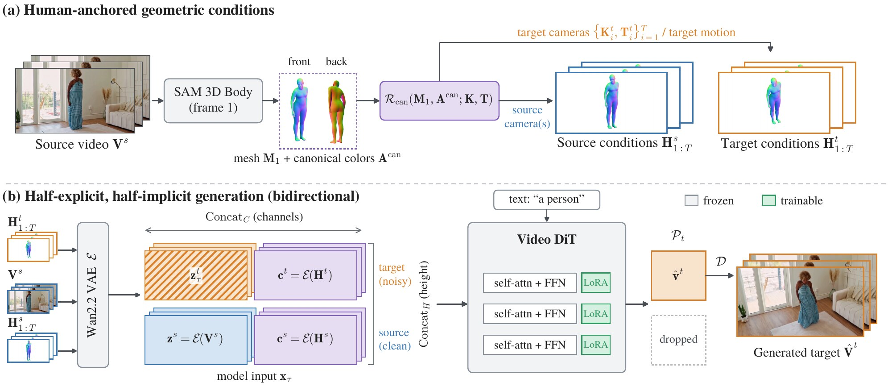
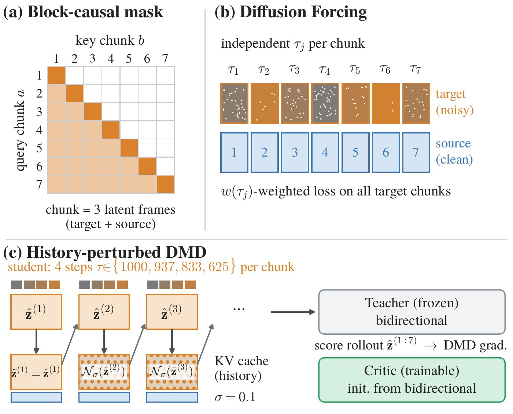
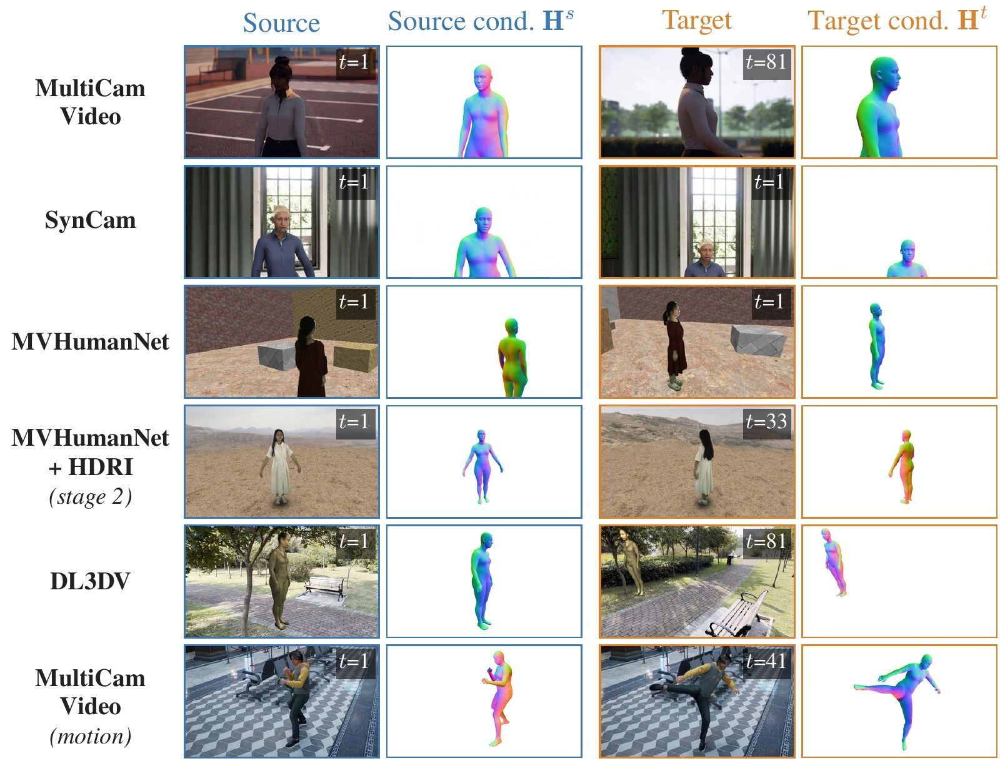

Existing camera-controlled video generation methods often fail when a person is the main subject. Due to the ambiguous implicit camera representation or inaccurate explicit geometry estimation, the generated video often displays incoherent camera changes between the human and the background, as well as distorted human structure or motion. We introduce AnchorMan, a video-to-video method that uses the human body as a geometric anchor for camera control. Given a source video and a target camera trajectory, we reconstruct a body mesh from the first frame and render it along the estimated source trajectory and the requested target trajectory. The paired renderings specify the viewpoint change relative to the subject, independent of the unknown scene scale, and supply body geometry for sides the source never shows. Replacing the fixed mesh with a sequence of posed meshes extends the same condition to motion control. We train a bidirectional model on synthetic renderings and real captures, and distill a causal variant that accepts updated camera commands as it generates successive chunks. On an extensive camera-control benchmark, AnchorMan achieves the highest joint success rate across camera, subject, and image-quality checks and the lowest body-orientation error on orbit trajectories. We plan to release the model weights and source code.

Overview of AnchorMan. (a) SAM 3D Body reconstructs a mesh from the first source frame; the frozen mesh is rendered as canonical normal maps under the source and target cameras. (b) Source and noisy target latents are concatenated along height, the condition maps along channels.
Human-anchored condition. The rendered body shows where the person appears, how large, and which side faces the camera. Rendering the frozen first-frame mesh under the source and target cameras gives two conditions whose difference encodes the relative camera motion; the model infers human motion and the surrounding scene from the source video. Per-frame meshes from a driving video give motion control, and rendering them under moving cameras gives joint control.
Height concatenation. We adapt Wan2.2-Fun-5B-Control with LoRA. Source and noisy target latents are concatenated along height; placing the target above the source keeps corresponding frames at the same temporal position for chunk-wise causal attention.

A block-causal mask, Diffusion Forcing, and DMD distillation give a causal model with four denoising steps per chunk; the first chunk is cached as an attention sink. Future geometric conditions can be updated without regenerating completed chunks.
Denoising time only.

Paired videos with body conditions from MultiCamVideo, SynCam, MVHumanNet (rendered scenes and HDRI composites) and DL3DV (inserted human). Camera-control pairs render one fixed mesh along both camera paths; motion-control pairs use per-frame target meshes. Columns: source, source condition, target, target condition.
AnchorMan (bidirectional) compared with ReCamMaster and GEN3C on in-the-wild human videos.
The source is a reference image repeated over time, and the target condition renders per-frame meshes. The motion comes from an unrelated driving video; this retargeting is an image-based heuristic, not calibrated motion capture.
For joint camera and motion control, the per-frame meshes are rendered under moving target cameras.
Full 360° orbits from a background-free video (top) and from a single image (bottom).
162 frames: two 81-frame windows. Beyond the 81-frame training length, each chunk attends to itself, the first chunk, and the six most recent chunks; the first chunk serves as an attention sink.
AnchorMan-DMD accepts updated camera commands as it generates successive chunks: future geometric conditions can be updated without regenerating completed chunks. On an RTX 6000 Ada it generates an 81-frame clip in 10.7 s (7.6 frames/s).
The user selects the anchor by passing person boxes on the first source frame to SAM 3D Body; the selected people are reconstructed with fixed poses and rendered together. People who are not selected appear only in the source video and are not constrained by the condition.
@article{ke2026anchorman,
title = {Anchor the Man, Move the Camera},
author = {Ke, Yuntian and Lyu, Weijie and Chen, Shuo and Shu, Zhixin and Yang, Ming-Hsuan},
journal = {arXiv preprint},
year = {2026}
}